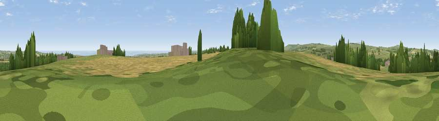

Beacon Hill
#7983 in England · top 29% of its area beats it · near ShilbottleThe view, rendered

A 360° render of this exact spot computed from the terrain model, tree cover and land cover — summer colours, afternoon light, calibrated against photographs of famous viewpoints. Real trees, hedges and buildings will differ in detail.
The panorama
Grey silhouette: terrain skyline in each direction (720 bearings, Earth curvature and refraction included). Dashed green: skyline with trees (+15 m) and buildings (+8 m) as obstacles. Blue strip: how far the ground is visible on each bearing.
Where the view opens
Wedge length = distance to the farthest visible ground on that bearing (vegetation-aware). Rings at 10, 25 and 50 km.
What fills the view
42% grassland · 39% cropland · 9% woodland · 8% water · 2% built-up
Angular shares of the visible panorama (visual magnitude), not map area. Landscape diversity 0.53 (0–1 Shannon).
Key numbers
More beautiful places nearby
The staircase of upgrades: each row has a higher view potential than everything closer. Driving times are estimates from straight-line distance, calibrated against real road routing — check an actual route before setting out.
| Place | Direction | Drive | Score |
|---|---|---|---|
| Viewpoint near Shilbottle | ENE · 1 km | ~2 min | 70.6 |
| Viewpoint near Alnwick | N · 4 km | ~10 min | 72.0 |
| Viewpoint near Bolton | WNW · 6 km | ~12 min | 74.7 |
| Viewpoint near Alnwick | NNW · 7 km | ~14 min | 77.7 |
| Cloudy Crags | NW · 7 km | ~14 min | 80.2 |
| Viewpoint near Whittingham | W · 12 km | ~23 min | 80.5 |
| Viewpoint near Glanton | NW · 13 km | ~23 min | 82.9 |
| Viewpoint near Eglingham | NW · 18 km | ~31 min | 83.8 |
55.36587, -1.70654 · source: dobih hill · position refined by local search. Computed location — check access rights before visiting.